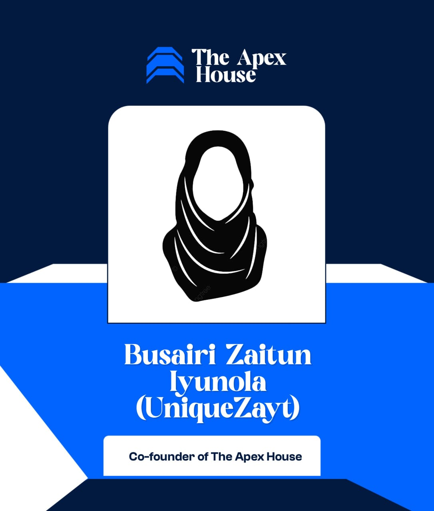

The Apex House
Busairi Zaitun Iyunola
Co-Founder, popularly known as UniqueZayt
Busairi Zaitun Iyunola, popularly known as UniqueZayt, is a purpose-driven creator, author and clarity strategist dedicated to helping individuals refine their identity, build with intention, and show up with confidence.
She is a Medical Laboratory Scientist who graduated from Usmanu Dan Fodio University, Sokoto.
She is the founder of UniqueZayt Hub, a creative brand that blends modest fashion and heartfelt gift curation with personalised expressions of love.
As a creative writer, she is the author of books including Nurturing Yourself, Establishing an Online Presence as a Female Vendor, The Missing Keys, and The Creator's Companion.
UniqueZayt is also the founder of YOUnique Core Academy, a transformative learning space where individuals discover their uniqueness, gain clarity, and build structured, purpose-driven lives and brands.
Through her initiatives, the LaunchPad Mentorship Course (LMC) and Tell To Thrive (TTT), she has built thriving communities like Unique LaunchPad Odyssey and The Thrive Trybe, guiding individuals toward growth, visibility, and self-mastery.
Fondly known as the Queen of Clarity, she is passionate about growth, deeply committed to knowledge, and intentional about helping others become the most refined version of themselves.